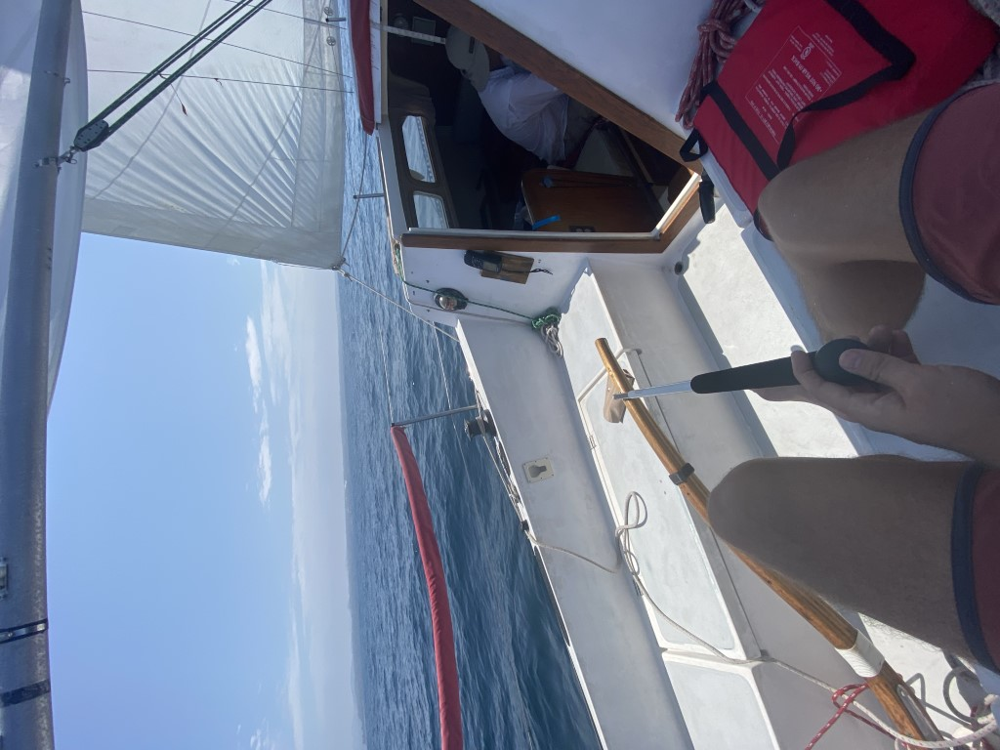
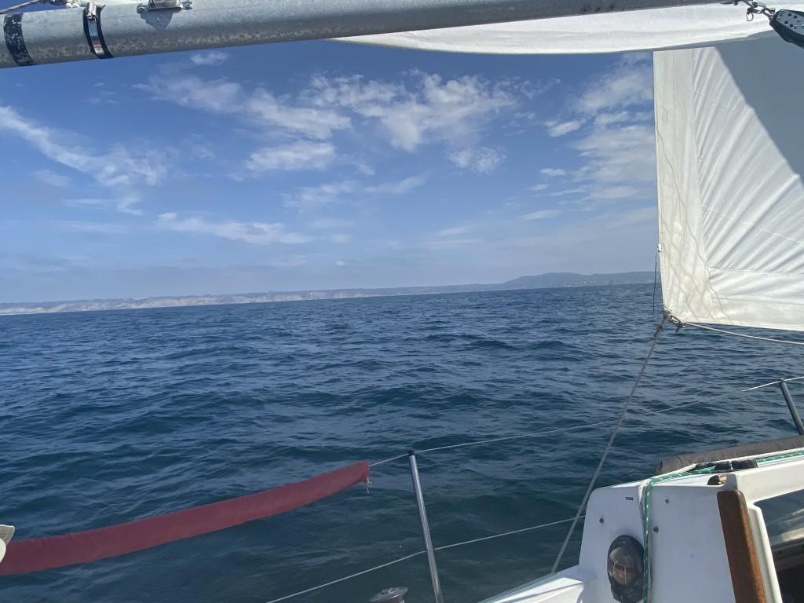
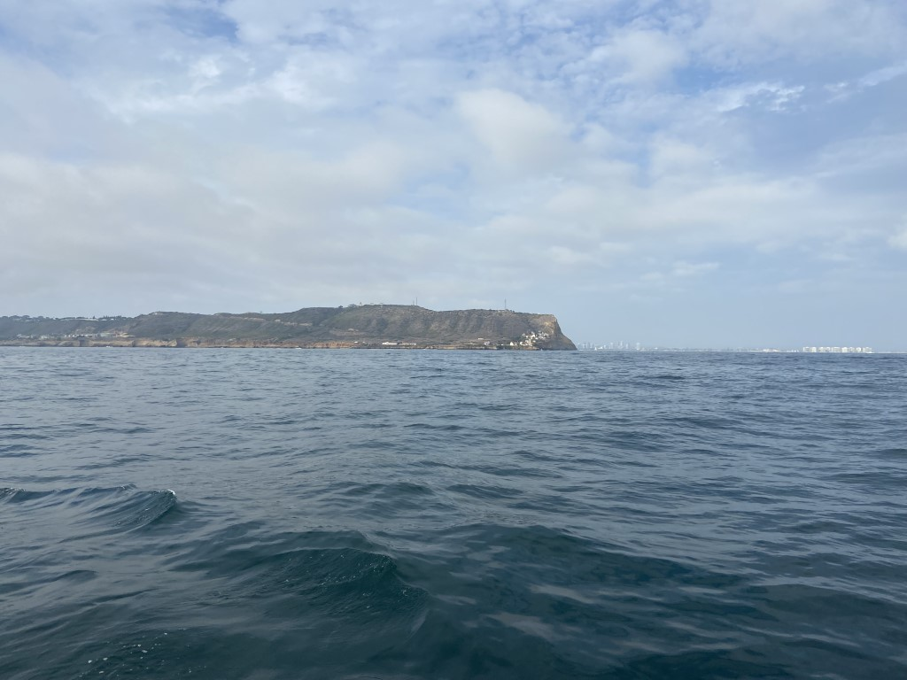

I purchased Pokey in Oceanside, so the first thing to do was sail her down to her new home in San Diego. I enlisted my Dad as crew. We left Oceanside at around 9:15am. As we motored out of the harbor, we were recorded on Surfline's Oceanside Harbor webcam.
Winds were light out of the W/NW as we left and there was some 2-4ft swell coming from the south. We quickly raised our sails and pointed due South.
Most of the voyage we stayed about 3nm off shore, bearing between 150 and 210 degrees. We averaged 4.1 knots and only motored for the last hour or so going around the tip of Point Loma, as the ocean glassed off for the evening. We had ample time to practice sail trim and get a feel for the boat. Winds were mostly from the West/NW, putting us on a broad reach for most of the trip. Between noon and 2pm we got our best wind, maybe 8-10kts, and we achieved some sustained periods of sailing at 5.5-6 knots, according to our gps.
Eventually we found ourselves off of Point Loma. We were slightly nervous about this part because of the kelp beds, which extend out 1-2 miles offshore around the point. We read many forum posts about people getting stuck in the thick kelp beds. Luckily we only saw scattered clumps of kelp, and because of the high tide we seemed to float above much of it. I did keep watch on the bow, looking out for big patches to avoid.
We came around the point around 6:30PM. We tried to stay about 1-2nm from shore to avoid the kelp, we expected to see much more kelp than we did. We entered the channel at buoy #5. We were joined by many large tuna fishing boats passing us in the channel. We landed at Shelter Island at around 7:30pm feeling exhausted but accomplished.